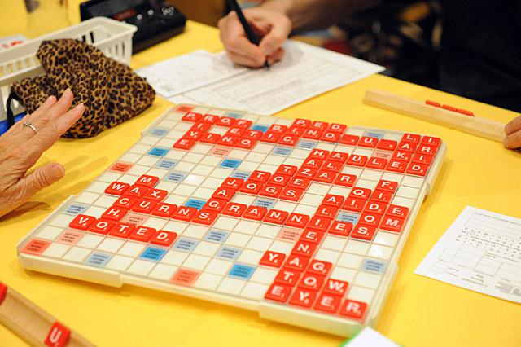
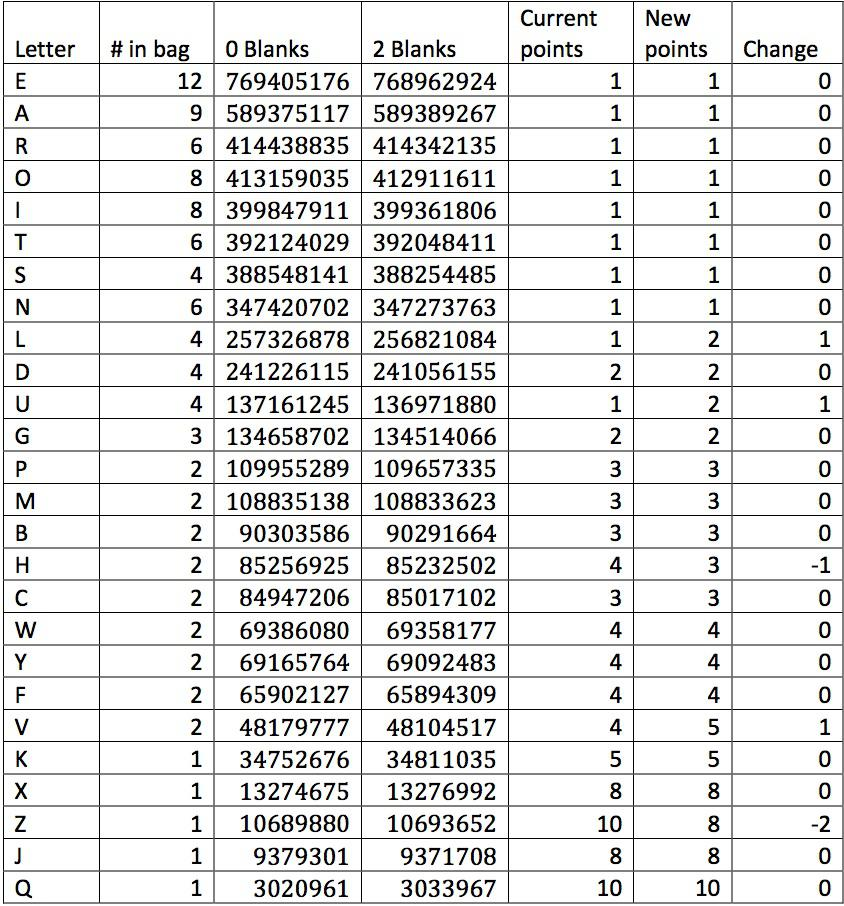

Re-evaluating the values of the tiles in Scrabble™

Recently I have seen quite a few blog posts written about re-evaluating the points values assigned to the different letter tiles in the Scrabble™ brand Crossword Game. The premise behind these posts is that the creator and designer of the game assigned point values to the different tiles according to their relative frequencies of occurrence in words in English text, supplemented by information gathered while playtesting the game. The points assigned to different letters reflected how difficult it was to play those letters: common letters like E, A, and R were assigned 1 point, while rarer letters like J and Q were assigned 8 and 10 points, respectively. These point values were based on the English lexicon of the late 1930’s. Now, some 70 years later, that lexicon has changed considerably, having gained many new words (e.g.: EMAIL) and lost a few old ones. So, if one were to repeat the analysis of the game designer in the present day, would one come to different conclusions regarding how points should be assigned to various letters?
I’ve decided to add my own analysis to the recent development because I
have found most of the other blog posts to be unsatisfactory for a
variety of reasons[1].
One article
calculated letters’ relative frequencies by counting the number of times
each letter appeared in each word in the Scrabble™ dictionary. But this
analysis is faulty, since it ignores the probability with which
different words actually appear in the game. One is far less likely to
draw QI than AE during a Scrabble™ game (since there’s only one Q in the
bag, but many A's and E's). Similarly, very long words like
ZOOGEOGRAPHICAL have a vanishingly small probability of appearing in the
game: the A’s in the long words and the A’s in the short words cannot be
treated equally. A second article I saw calculated
letter frequencies based on their occurrence in the Scrabble™ dictionary
and did attempt to weight frequencies based on word length. The author
of this second article also claimed to have quantified the extent to
which a letter could “fit well” with the other tiles given to a player.
Unfortunately, some of the steps in the analysis of this second article
were only vaguely explained, so it isn’t clear how one could replicate
the article’s conclusions. In addition, as far as I can tell, neither of
these articles explicitly included the distribution of letters (how many
A’s, how many B’s, etc) included in a Scrabble™ game. Also, neither of
these articles accounted for the fact that there are blank tiles (that
act as wild cards and can stand in for any letter) that appear in the
game.
So, what does one need to do to improve upon the analyses already performed? We’re given the Scrabble™ dictionary and bag of 100 tiles with a set distribution, and we’re going to try to determine what a good pointing system would be for each letter in the alphabet. We’re also armed with the knowledge that each player is given 7 letters at a time in the game, making words longer than 8 letters very rare indeed. Let’s say for the sake of simplicity that words 9 letters long or shorter account for the vast majority of words that are possible to play in a normal game.
{kind=link}
Based on these constraints, how can one best decide what points to assign the different tiles? As stated above, the game is designed to reward players for playing words that include letters that are more difficult to use. So, what makes an easy letter easy, and what makes a difficult letter difficult? Sure, the number of times the letter appears in the dictionary is important, but this does not account for whether or not, on a given rack of tiles (a rack of tiles is to Scrabble™ as a hand of cards is to poker), that letter actually can be used. The letter needs to combine with other tiles available either on the rack or on the board in order to form words. The letter Q is difficult to play not only because it is used relatively few times in the dictionary, but also because the majority of Q-words require the player to use the letter U in conjunction with it.
So, what criterion can one use to say how useful a particular tile is? Let’s say that letters that are useful have more potential to be used in the game: they provide more options for the players who draw them. Given a rack of tiles, one can generate a list of all of the words that are possible for the player to play. Then, one can count the number of times that each letter appears in that list. Useful letters, by this criterion, will combine more readily with other letters to form words and so appear more often in the list than un-useful letters.
(I would also like to take a moment to preempt criticism from the competitive Scrabble™ community by saying that strategic decisions made by the players need not be brought into consideration here. The point values of tiles are an engineering constraint of the game. Strategic decisions are made by the players, given the engineering constraints of the game. Words that are “available to be played” are different from “words that actually do get played.” The potential usefulness of individual letter tiles should reflect whether or not it is even possible to play them, not whether or not a player decides that using a particular group of tiles constitutes an optimal move.)
To give an example, suppose I draw the rack BEHIWXY. I can generate[2] the full list of words available to be played given this rack: BE, BEY, BI, BY, BYE, EH, EX, HE, HEW, HEX, HEY, HI, HIE, IBEX, WE, WEB, WHEY, WHY, WYE, XI, YE, YEH, YEW. Counting the number of occurrences of each letter, I see that the letter E appears 18 times, while the letter W only appears 7 times. This example tells me that the letter E is probably much more potentially useful than the letter W.
The example above is only one of the many, many possible racks that one can see in a game of Scrabble™. I can use a Monte Carlo-type simulation to estimate the average usefulness of the different letters by drawing many example racks. Monte Carlo is a technique used to estimate numerical properties of complicated things without explicit calculation. For example, suppose I want to know the probability of drawing a straight flush in poker.[3] I can calculate that probability explicitly by using combinatorics, or I can use a Monte Carlo method to deal a large number of hypothetical possible poker hands and count the number of straight flushes that appear. If I deal a large enough number of hands, the fraction of hands that are straight flushes will converge upon the correct analytic value. Similarly here, instead of explicitly calculating the usefulness of each letter, I use Monte Carlo to draw a large number of hypothetical racks and use them to count the number of times each letter can be used. Comparing the number of times that each tile is used over many, many possible racks will give a good approximation of how relatively useful each tile is on average. Note that this process accounts for the words acceptable in the Scrabble™ dictionary, the number of available tiles in the bag, as well as the probability of any given word appearing.
In my simulation, I draw 10,000,000 racks, each with 9 tiles (representing the 7 letters the player actually draws plus two tiles available to be played through to form longer words). I perform the calculation two different ways: once with a 98-tile pool with no blanks, and once with a 100-tile pool that does include blanks. In the latter case, I make sure to not count the blanks used to stand in for different letters as instances of those letters appearing in the game. The results are summarized in the table below.

There are two key observations to be made here. First, it does not seem to matter whether or not there are blanks in the bag! The results are very similar in both cases. Second, it would be completely reasonable to keep the tile point values as they are. Only the Z, H, and U appear out of order. It’s only if one looks very carefully at the differences between the usefulness of these different tiles that one might reasonably justify re-pointing the different letters.
For fun, I have included in the table my own suggestions for what these tiles’ values might be changed to based on the simulation results. (Note: here's where any pretensions of scientific rigor go out the window.) I have kept the scale of points between 1 and 10, as in the current pointing system. I have assigned groups of letters the same number of points based on whether they have a similar usefulness score. Here are the significant changes: L and U, which are significantly less useful than the other 1-point tiles may be bumped up to 2 points, comparable to the D and G. The letter V is clearly less useful than any of the other three 4-point tiles (W, Y, and F, all of which may be used to form 2-letter words while the V forms no 2-letter words), and so is undervalued. The H is comparable to the 3-point tiles, and so is currently overvalued. Similarly, the Z is overvalued when one considers how close to the J it is. Unlike in the previous two articles that I mentioned, I don't find any strong reason to change the value of the letter X compared to the other 8 point tiles. I suppose one could lower its value from 8 points to 7, but I have (somewhat arbitrarily) chosen not to do so.
One may also ask the question whether or not the fact that a letter forms 2- or 3-letter words is unfairly biasing that letter. In particular, is the low usefulness of the C and V compared to comparably-pointed tiles due to the fact that they form no 2-letter words? Performing the simulation again without 2-letter words, I found no changes in the results in any of the letters except for C, which increased in usefulness above the B and the H. The letter V's ranking, however, did not change at all, indicating that unlike the C the V is difficult to use even when combining with letters to make longer words. Repeating the simulation yet again without 2- or 3-letter words yielded the same results.
As a final note, I would like to respond directly to to Stefan Fatsis's excellent article about the so-called controversy surrounding re-calculating tile values and say that I am fully aware that this is indeed a "statistical exercise," motivated mostly by my desire to do the calculation made by others in a way that made sense in the context of the game of Scrabble. Similarly, I realize that these recommendations are unlikely to actually change anything. Given that the original points values of the tiles are still justifiably appropriate by my analysis, it's not like anybody at Hasbro is going to jump to "fix" the game. Lastly, my calculations have nothing to do with the strategy of the game whatsoever, and cannot be used to learn how to play the game any better. (If anything, I've only confirmed some things that many experienced Scrabble players already know about the game, such as that the V is a tricky tile, or that the H, X, and Z tiles, in spite of their high point values, are quite flexible.)
Notes
1. ^ To state my own credentials, I have played Scrabble™competitively for 4 years, and am quite familiar with the mechanics of the game, as well as contemporary strategy.
2. ^ Credit where credit is due: Alemi provided the code used to generate the list of available words given any set of tiles. Thanks Alemi!
3. ^ Monte Carlo has a long history of being used to estimate the properties of games. As recounted by George Dyson in Turing’s Cathedral, in 1948 while at Los Alamos the mathematician Stanislaw Ulam suffered a severe bout of encephalitis that resulted in an emergency trepanation. While recovering in the hospital, he played many games of solitaire and was intrigued by the question of how to calculate the probability that a given deal could result in a winnable game. The combinatorics required to answer this question proved staggeringly complex, so Ulam proposed the idea of generating many possible solitaire deals and merely counting how many of them resulted in victory. This proved to be much simpler than an explicit calculation, and the rest is history: Monte Carlo is used today in a wide variety of applications.
Additional References:
The photo at top of a Scrabble™ board was taken during the 2012 National Scrabble™ Championship. Check out the 9-letter double-blank BINOCULAR.
For anyone interested in learning more about the fascinating world of competitive Scrabble™, check out Word Freak, also by Stefan Fatsis. This book has become more or less the definitive documentation upon this subculture. If you don't have enough time to read, check out Word Wars, a documentary that follows many of the same people as Fatsis's book. (It still may be available streaming on Netflix if you hurry.)